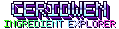

Code & Data
Code I have written for stellar population inference, and the interactive pages built on it. The codes are open source under the MIT licence; issues, pull requests and feature requests are welcome.
CERIDWEN · github.com/Espe13/ceridwen
CERIDWEN (Comprehensive SED Estimation Routine Involving Data-driven Weight calculatioNs) fits stellar population models to galaxy photometry and spectra. It is written in JAX and covers the full forward model: simple stellar populations, nebular emission, dust, and the projection onto the observed frame. Every step is differentiable and runs on the GPU, so posteriors over stellar mass, star-formation history, chemical enrichment, dust and redshift can be sampled there directly.
Production runs use a GPU nested slice sampler, and Hamiltonian Monte Carlo and variational inference are available for the same model. Star-formation histories can be non-parametric with of order one hundred age bins, with chemical enrichment sampled jointly. On high-redshift galaxies CERIDWEN is a median of 134 times faster than Prospector on a CPU.
CERIDWEN Ingredient Explorer · runs in the browser
A browser port of the CERIDWEN forward model, checked against the Python code. You can change the stellar population, the gas and the dust, add AGN and dust emission, and see how the spectrum changes and how the galaxy would look through the filters and spectrographs of many telescopes. It can also make mock catalogues.

Change the stars, gas and dust of a model galaxy and watch its spectrum respond, then see how it would look through the filters and spectrographs of many telescopes. Runs a port of the CERIDWEN forward model in your browser.JADES fit explorer · interactive catalogue
In JADES I lead a value-added catalogue of inferred physical properties (stellar masses, star-formation histories, dust, metallicities and ionising properties) for the galaxies with both NIRCam photometry and NIRSpec spectroscopy, fitted jointly with CERIDWEN. The fit explorer shows these fits and their posteriors in two views: a searchable catalogue table with a page for each galaxy, and the SED manifold, which shows scaling relations as rotating projections of the fitted parameter space and can be filtered by redshift and spectroscopic quality.
sedpy_jax · github.com/Espe13/sedpy_jax
A JAX reimplementation of sedpy (B. D. Johnson) for differentiable filter handling and broadband photometry on the GPU. It covers transmission curves, AB and Vega magnitudes, flux-conserving rebinning, air–vacuum conversion, and effective, pivot and zero-point wavelengths, all vectorised over many filters at once.